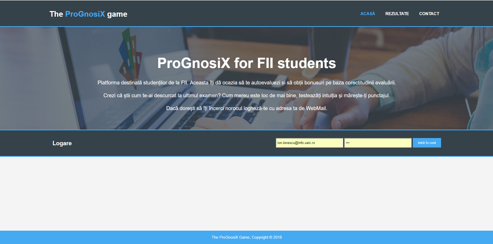
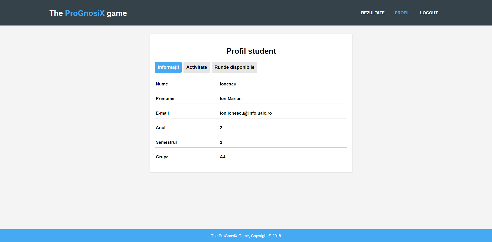
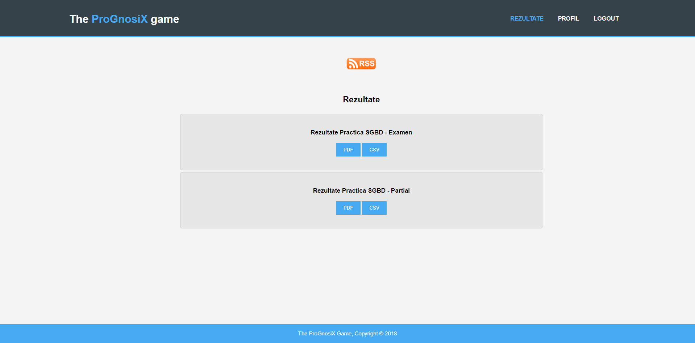
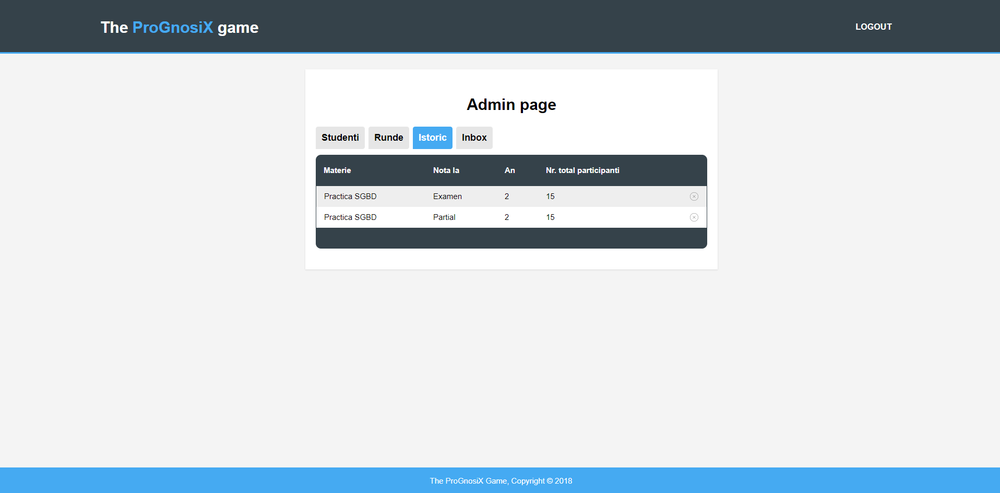
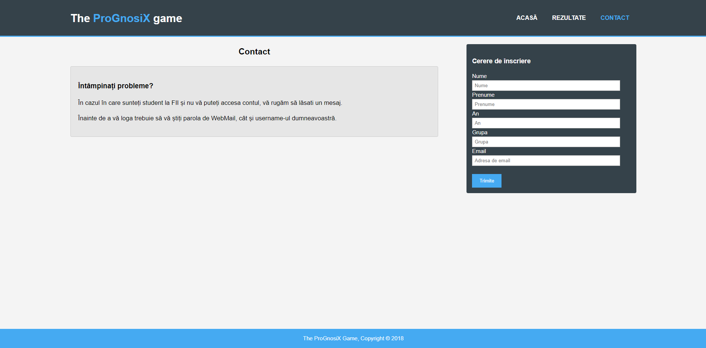

ProGnosiX este o aplicatie web dedicata studentilor si profesorilor Facultatii de Informatica Iasi. Aceasta propune o alternativa la sistemul de evaluare in care studentul insasi este implicat.
Mai exact acesta va avea posibilitatea de a-si estima notele de la anumite discipline avand astfel posibilitatea de a i se mari nota finala (in cazul in care isi face o autoevaluare exacta), dar
in acelasi timp asumandu-si riscul ca nota finala sa fie scazuta (cazul in care studentul nu apreciaza corect nota sa).
Inregistrarea conturilor pentru studenti revine adminilor (care pot fi profesori), care ii asigneaza in anul corespunzator si le asociaza adresa de mail de la facultate.
Studentul va avea posibilitatea de a aprecia notele sale doar la materiile din anul si semestrul in care este inregistrat.
La finalul unei runde se citesc din baza de date prognozele efectuate de studentii participanti si notele initiale din fisierul incarcat de admin, se compara cele doua note si se publica noile note pe pagina de Rezultate
, de unde pot fi descarcate de student in format PDF sau CSV.
2. Etapele dezvoltarii proiectului
Design/Arhitectura
Creare pagini front-end
Design back-end
Modelare baza de date
Code refactoring
Realizarea documentatiei si ghidului de utilizare
3. Progresul inregistrat
Front-end
Pagini create

Pagina de start cu campul de logare si bara de meniu.

Pagina de profil a studentului.

Pagina cu rezultatele disponibile.

Pagina admin cu cele 4 taburi (Studenti, Runde, Istoric, Inbox).

Pagina de contact unde studentii pot solicita cont.
Back-end
Pe partea de back-end s-a folosit o baza de date care va contine script-uri de creare si populare a unor tabele.
5. Tehnologii utilizate
1. HTML / CSS
Pentru partea de front-end se foloseste html. Scopul HTML este mai degraba prezentarea informatiilor – paragrafe, fonturi, tabele etc. – decat descrierea semanticii
documentului. CSS este un standard pentru formatarea elementelor unui document HTML. Stilurile se pot atașa elementelor HTML prin intermediul unor fișiere externe.
2. PHP
PHP este un limbaj de programare folosit inițial pentru a produce pagini web dinamice, este folosit pe scară largă în dezvoltarea paginilor și aplicațiilor web.
Se folosește în principal înglobat în codul HTML.
3. Wampserver
Wampserver este un environment de dezvoltare web pentru sistemul de operare Windows care permite utilizatorului
sa creeze aplicatii web folosind PHP , baze de date MySQL si Apache. Baza de date poate fi gestionata usor utilizand PHPMyAdmin.]
4. Ajax
Ajax este o tehnică de programare pentru crearea de aplicații web interactive.
Intenția este să facă paginile web să devină mai rapide și deci mai acceptate, prin schimbul în fundal al unor cantități mici de date cu serverul, astfel încât să nu fie nevoie ca pagina să fie reîncărcată la fiecare acțiune a utilizatorului.
Aceasta are ca scop creșterea interactivității, vitezei și ușurinței în utilizare a aplicațiilor web.
4. MySQL
MySQL este componentă integrată a platformelor LAMP sau WAMP (Linux/Windows-Apache-MySQL-PHP/Perl/Python).
Popularitatea sa ca aplicație web este strâns legată de cea a PHP-ului care este adesea combinat cu MySQL și denumit Duo-ul Dinamic.
6. Servicii utilizate
GitHub
GitHub este un serviciu de gazduire web pentru proiecte de dezvoltare a software-ului care utilizeaza sistemul de control al versiunilor Git. GitHub ofera planuri
tarifare pentru depozite private si conturi gratuite pentru proiecte open source. De asemenea, exista o optiune speciala, care este atribuita studentilor, unde au voie la 5
proiecte private fara sa existe un plan tarifar.